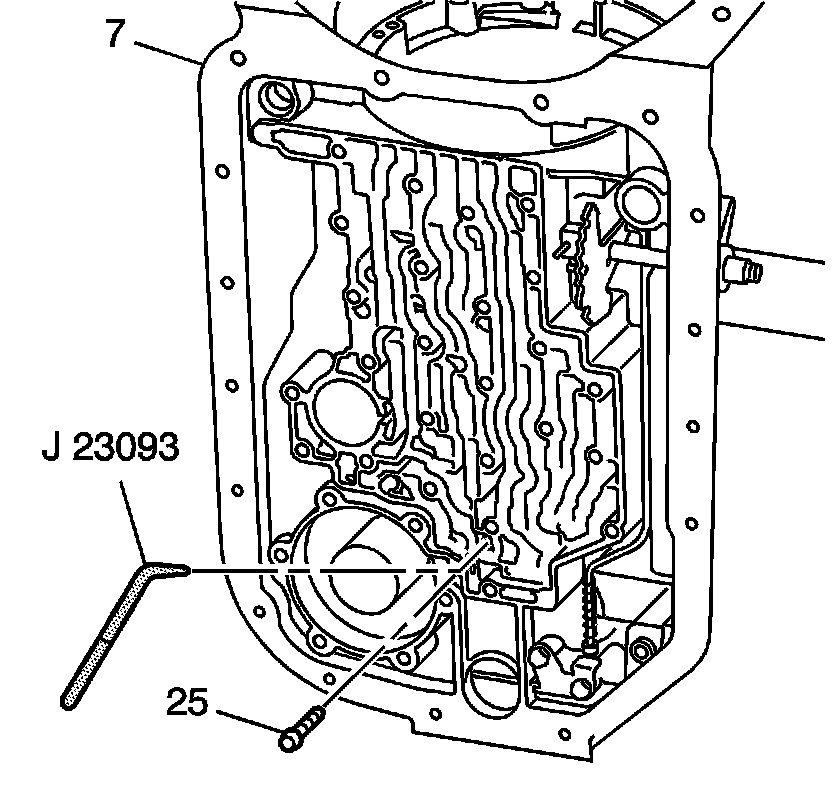
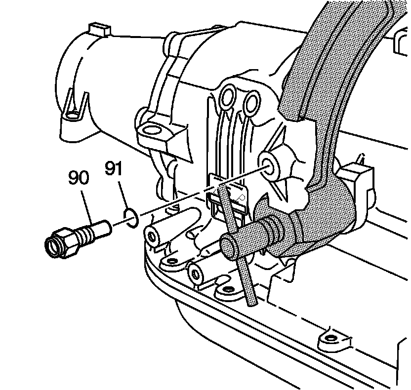

Center Support Bolt/Cooler Pipe Fitting Installation
Center Support Bolt/Cooler Pipe Fitting Installation
Tools Required
J 23093 Center Support Alignment Tool

Important: If the center support assembly has been reconditioned, you must use a new yellow-colored center support bolt in order to maintain proper bolt torque.
1. Using the J 23093, locate the center support 2nd clutch fluid passage through the hole in the case bottom. Refer to Fluid Passages, Case Fluid Passages illustration.
2. Push the J 23093 toward the low and reverse band servo bore, seating the center support splines against the case splines.
Notice: Refer to Fastener Notice.
Important: Do not overtighten the center support bolt.
3. Install the new center support bolt (25).
Maintain pressure on J 23093 while tightening the new center support bolt to 43 N.m (32 lb ft).
4. Ensure that the center support bolt head is seated to the bottom of the case.

5. Install a new rear oil cooler pipe fitting seal (91) onto the rear oil cooler pipe fitting (90).
6. Install the rear oil cooler pipe fitting (90) into the transmission case.
Tighten the fitting to 35 N.m (26 lb ft).